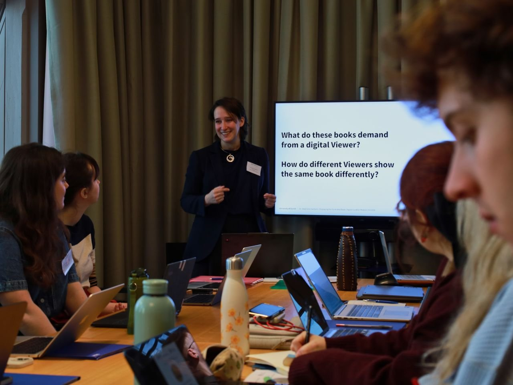

Teaching
Courses at the Chair of East Asian Art History, University of Zurich, since 2024. Course credits are given in ECTS, the European credit system: one ECTS credit equals about thirty hours of student work.

Current semester, autumn 2026
- Autumn 2026Introduction to Japanese ArtBA survey course, sole instructor
- Autumn 2026Introduction to East Asian Art History: PropaedeuticsIntroductory course for first-year BA students, co-taught
- October 2026Displaying the Illustrated Book: Digital Curation ModuleBlock seminar of three morning workshops, October 26 to November 1, 2026. Taught as Ishibashi Foundation Lecturer for Digital Curation.
- Autumn 2026AI and the MA thesisGuest session in the MA seminar “Artist in East Asia”
Earlier courses
- Spring 2026Methods in Digital (Art) Curation: The Sigg CollectionHands-on methods course for BA and MA students, 6 ECTS
- Spring 2026Narrative Layers: Unveiling and Rewriting East Asian ArtBA seminar, co-taught, 6 ECTS
- Spring 2026Excursion: East Asian Art Collections in the UKCo-taught with the Chair, 3 ECTS
- Autumn 2025Introduction to East Asian Art History: PropaedeuticsIntroductory course for first-year BA students, 6 ECTS
- Spring 2025Iridescent Luxuries: Perspectives on Commodities as Art in East AsiaBA seminar, co-taught, 6 ECTS
- Spring 2025Excursion: East Asian Art Collections in GenevaCo-taught with the Chair, 6 ECTS
- Autumn 2024Introduction to East Asian Art History: PropaedeuticsIntroductory course for first-year BA students, sole instructor, 6 ECTS
- Autumn 2024Introduction to Japanese ArtBA, co-taught with the Chair, 9 ECTS
- Autumn 2024Topical Readings in East Asian Art HistoryMA, examiner
- Autumn 2024Joint Workshop in East Asian Art History with Kansai UniversityKansai University, Osaka, and University of Zurich, 3 ECTS
Program design
Developed redesigned assessment structures and guidelines for AI use, integrated into the University of Zurich’s learning platforms. The guidelines are written with AI_d, a chatbot developed in 2025–2026 that helps teachers set rules for AI use in their courses: available on Teaching Tools, the University of Zurich teaching platform, and described in Teaching in Higher Education (2026). The chatbot script is open under CC BY 4.0, in English and German. More on the Research page. Since 2024, contributions to the conceptual development of the Chair’s study program: programme design, assessment redesign, guidelines, and team communication.
Supervision
- 2026MA thesis on the Kano painter Kiyohara YukinobuPlanned submission December 2026
- 2025BA thesis on the changing depiction of oniCo-supervision
Workshops and other teaching
- March 2026Roundtable on digital humanities teaching across Switzerland and Japan, with the National Institutes for the Humanities (NIHU), JapanUniversity of Zurich
- August 2025Developing Learning-Outcome-Oriented AI Usage GuidelinesAI in Teaching Forum, University of Zurich
- February 2025“Smapshot” and Snapshots: Project Presentation and Career Development Q&ANippon Foundation Fellows Workshop, Inter-University Center for Japanese Language Studies (Stanford IUC), Yokohama
- 2019–2025LecturerAlumni society of the student exchange program between Switzerland and the Kansai region of Japan
- April 2018The Late Hokusai knowledge graph on ResearchSpaceLate Hokusai research workshops, Freer and Sackler Galleries, Washington DC, and Metropolitan Museum of Art, New York
- 2012Teaching Assistant, e-learning seminar of virtual lecturesUniversity of Zurich